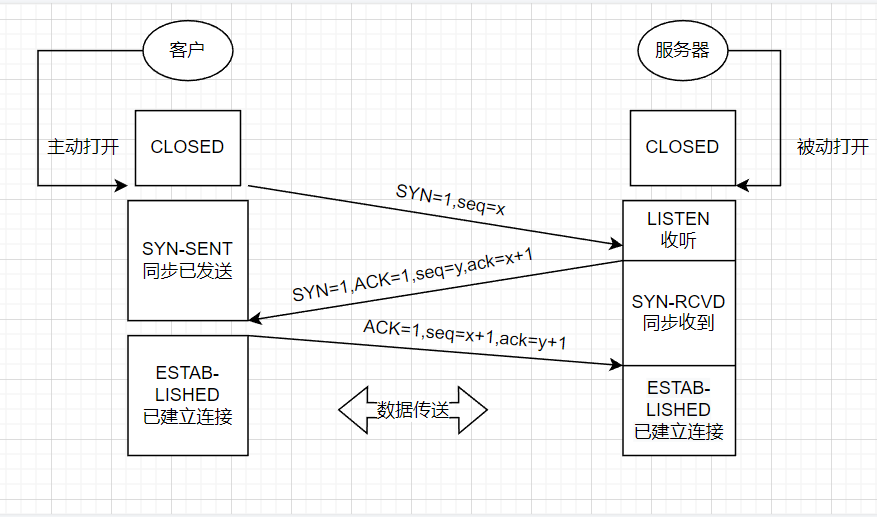

第三周作业
背景
1、yum私有仓库的实现及博客输出
解析：
1
2
3
4
5
6
7
8
9
10
11
12
13
14
15
16
17
18
19
20
21
22
23
24
25
26
27
28
29
30
31
| cd /etc/yum.repos.d/
vim base.repo
[Baseos]
name=Baseos
baseurl=file:///misc/cd/BaseOS
https://mirrors.nju.edu.cn/rocky/$releasever/BaseOS/x86_64/os/
gpgcheck=1
gpgkey=file:///etc/pki/rpm-gpg/RPM-GPG-KEY-rockyofficial
[AppStream]
name=AppStream
baseurl=file:///misc/cd/AppStream
https://mirrors.nju.edu.cn/rocky/$releasever/AppStream/x86_64/os/
gpgcheck=1
gpgkey=file:///etc/pki/rpm-gpg/RPM-GPG-KEY-rockyofficial
[epel]
name=epel repo
baseurl=https://mirrors.aliyun.com/epel/$releasever/Everything/x86_64/
https://mirrors.tuna.tsinghua.edu.cn/epel/$releasever/Everything/x86_64/
gpgcheck=0
：wq
yum -y install httpd || systemctl enable --now httpd
dnf reposync --repoid=epel --download-metadata -p /var/www/html/
reposync -r epel -p /var/www/html/
createrepo /var/www/html/epel/建立源数据
完成yum源私有
|
2、画图 TCP协议和三次握手及四次挥手
解析：
TCP协议：
三次握手：

四次挥手：
3、静态配置网卡IP，centos/ubuntu实现
解析：
1
2
3
4
5
6
7
8
9
10
11
12
13
14
15
16
17
18
19
20
21
22
23
24
25
26
27
28
| centos
ip a
vim /etc/sysconfig/network-scripts/ifcfg-ens33
BOOTPROTO="satic"
IPADDR=10.0.0.146
NETMASK=255.255.255.0
GATEWAY=10.0.0.2
DNS1=114.114.114.114
DNS2=8.8.8.8
:wq
reboot
systemctl stop NetworkManager.service
systemctl disable NetworkManager.service
systemctl restart network
ubuntu
ip a
ls /etc/netplan
vim /etc/netplan/00-installer-config.yaml
dhcp4: no
addresses:[10.0.0.129/24]
GATEWAY=10.0.0.2
nameservers:
addresses:[8.8.8.8,114.114.114.114]
:wq
netplan apply
|
脚本题
- 实现免密登陆脚本, expect登陆远程主机，将生成的密钥写入到目标主机, expect测试远程登陆。
1）通过shift读取脚本参数
2）通过select来选择功能.例如功能有
- 安装mysql
- 安装apache
- 免密钥登陆主机
当前我们只实现免密钥登陆主机
3）通过函数封装每个功能
4）将免密钥登陆的过程可以重复进行, while 循环实现重复，需要有退出过程。当用户输入exit时，退出免密钥功能。
5）支持输入一批主机免密钥，使用数组 实现
解析：
1
2
3
4
5
6
7
8
9
10
11
12
13
14
15
16
17
18
19
20
21
22
23
24
25
26
27
28
29
30
31
32
33
34
35
36
37
38
39
40
41
42
43
44
45
46
47
48
49
50
|
ssh() {
while true;do
read -p "Enter your ip and password" ip password
if [ "$ip" = "exit" ];then
exit
fi
expect << EOF
set timeout 15
spawn ssh-keygen -t rsa
expect {
"/root/.ssh/id_rsa)"{ send "\n";exp_continue}
"(y/n)?"{ send "y\n";exp_continue}
"passphrase):"{ send "\n";exp_continue}
"again:"{ send "\n";exp_continue}
}
spawn ssh-copy-id root@$ip
expect {
"yes/no"{ send "yes\n";exp_continue }
"password"{ send "$password\n"}
}
expect eof
EOF
done
}
PS3="Please select a function(1-5)"
select MENU in 安装sql 安装apache 免密钥登录主机 输入一批主机免密钥 退出;do
case $REPLY in
1)
echo "安装sql";;
2)
echo "安装apache";;
3)
ssh;;
4)
echo "输入一批主机免密钥";;
5)
echo "exit"
break;;
esac
done
|